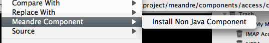

Meandre Engine supports non java components based on LISP and PYTHON. These components do not have any
jar dependencies and the scripts are embedded in the descriptor. To install a component that is written
in LISP or PYTHON, select the rdf descriptor that makes the component and select "Install Non Java Component"
from the Meandre Component menu option.
